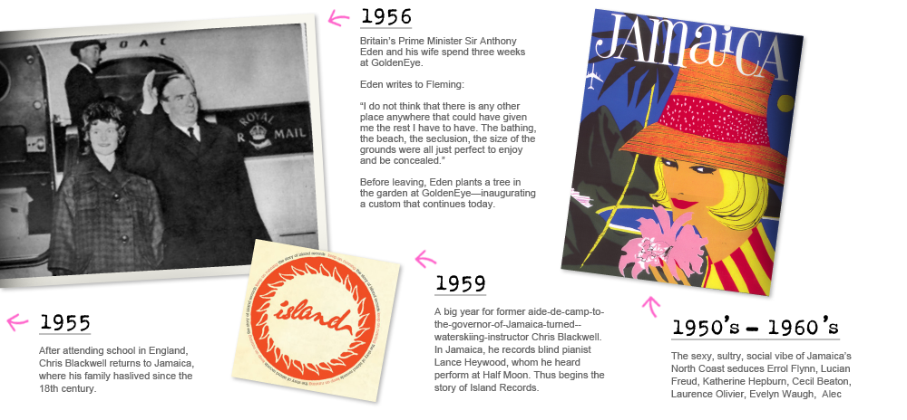

Our Story:
The House that Fleming Built
GoldenEye History, Part One: Ian Fleming
Ian Fleming first came to Jamaica during WWII, sent by Naval Intelligence to investigate U-Boat activities in the Caribbean. It was difficult for him to keep his mind on the war, such was the beauty of the place and its people. It was love at first glance. Paradise on earth. He knew that when the war ended, it was there that he would live out his life, in the sun, by the sea. He had visited a property on the sea in the little village of Oracabessa Bay, which means “golden head.” By chance he had been working on a naval operation called GoldenEye. He bought the property, and when the war ended, built his dream house–a perfect place to heal the psychic wounds of war and escape the civility of civilization. Above all it was a place to dream. And it was at GoldenEye that he dreamed up James Bond, 007, who turned out to be an escape for millions of readers.
GoldenEye History, Part Two: Chris Blackwell
If any man is an island it’s Chris Blackwell, who founded Island Records in 1959. A brilliantly independent label just off the coast of the music industry, Island did more to change the cultural landscape than any record label in history. Island Records brought reggae music to the world outside Jamaica, with Blackwell himself producing Bob Marley and the Wailers. Island broke British acts like Traffic, Bad Company, ELP, Free, Fairport Convention, King Crimson, and the greatest of world music from the Irish traditionalists The Chieftains to Africans like King Sunny Ade. It brought us such independent spirits as Roxy Music, Brian Eno, Sparks, Grace Jones, Marianne Faithfull, Tom Waits and that Irish band, U2. Blackwell purchased GoldenEye from the Fleming estate in 1976. Since then, he has grown the original 19 acre property, with just Fleming’s Villa, into a 52-acre world class property that is the flagship of Blackwell’s Island Outpost properties.
About the Oracabessa Foundation and our community
One of the things that makes coming to GoldenEye such an unparalleled experience, is the community of Oracabessa. With a vibe and energy all its own we hope you'll take some time to visit the local shops and meet some of the local residents that give Oracabessa its unique character. On your visit you'll probably notice that Oracabessa faces its share of challenges. Chris Blackwell started the Oracabessa Foundation in 1995 as a way to ensure that GoldenEye plays a role in building a better Oracabessa. The Foundation works in the areas of health, environment, education and sport. A few of our ongoing projects include: Oracabessa Bay Fish Sanctuary, H.E.A.R.T. Vocational Training Centre, Swim Jamaica program, Primary School Sports Leagues and even a BMX racing track! Of course, we would love to do more in working towards a sustainable future for Oracabessa. We hope that after you see our projects in action, you will too. www.oracabessafoundation.org
About Island Outpost
There are no other GoldenEye hotels; however, there are other Island Outposts. They include Strawberry Hill, The Caves and Geejam, as well as private villas, all located in Jamaica. The atmosphere at every Island Outpost property is casual and friendly. Fresh local food, and efficient and unobtrusive service, are hallmarks of each. And the Island Outpost properties share a common sensibility that makes them appealing to the sophisticated, laid-back traveler—seeking a personal and relaxed experience. Just like you feel when staying in the home of good friends.
Here's what Condé Nast Traveler has to say about Island Outpost properties: Like a close-knit family of wildly attractive, intelligent and anarchic kids, they are utterly independent and quite impossible to separate from one another. But something they have all inherited is Blackwell's easy charm, his amused and iconoclastic view of the world, his sense of fun and style, his instinct for beauty.
For more information, visit www.islandoutpost.com.